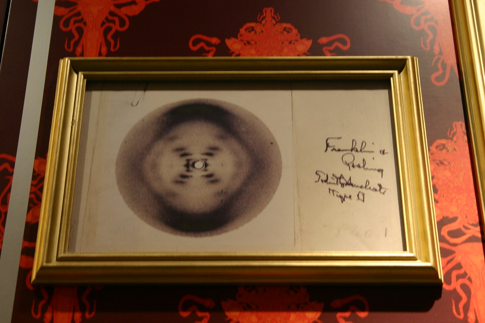

Rosalind Franklin
Rosalind Franklin (1920-1958) foi uma cientista britânica responsável pela "foto 51", a primeira a registrar nitidamente a estrutura do DNA. Além disso, a química também se dedicou a estudos sobre o carvão mineral, RNA e vírus.
Suas descobertas foram essenciais para se conseguir determinar a forma em dupla hélice do DNA, sigla para Ácidos Desoxirribonucleico.
